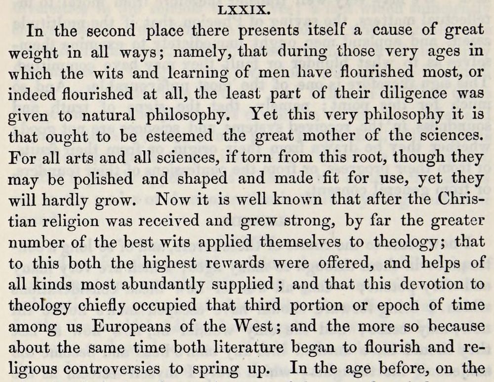
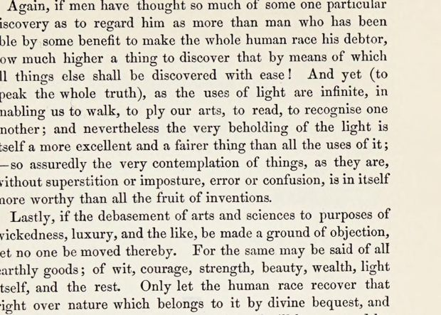

“The best wits applied themselves to theology” (Book I, aphorism 79)
English: Spedding and Ellis’s translation, Works vol. IV (1858), p. 78, scan n91. Highlighted: what Lecky’s text before note 103 reports.

In the second place there presents itself a cause of great weight in all ways; namely, that during those very ages in which the wits and learning of men have flourished most, or indeed flourished at all, the least part of their diligence was given to natural philosophy. Yet this very philosophy it is that ought to be esteemed the great mother of the sciences. For all arts and all sciences, if torn from this root, though they may be polished and shaped and made fit for use, yet they will hardly grow. Now it is well known that after the Christian religion was received and grew strong, by far the greater number of the best wits applied themselves to theology; that to this both the highest rewards were offered, and helps of all kinds most abundantly supplied; and that this devotion to theology chiefly occupied that third portion or epoch of time among us Europeans of the West; and the more so because about the same time both literature began to flourish and religious controversies to spring up.
The aphorism continues (read in the OCR only) with the second period, when among the Romans “the meditations and labours of philosophers were principally employed and consumed on moral philosophy, which to the Heathen was as theology to us”, and with the Greeks after Socrates. Aphorism 89 (p. 87) adds that natural philosophy has always had “a troublesome adversary and hard to deal with; namely, superstition, and the blind and immoderate zeal of religion”.
“The very beholding of the light” (Book I, aphorism 129)
English: Spedding’s translation, Works vol. IV, p. 115, scan. Highlighted: the sentence Lecky quotes in another translation.

Again, if men have thought so much of some one particular discovery as to regard him as more than man who has been able by some benefit to make the whole human race his debtor, how much higher a thing to discover that by means of which all things else shall be discovered with ease! And yet (to speak the whole truth), as the uses of light are infinite, in enabling us to walk, to ply our arts, to read, to recognise one another; and nevertheless the very beholding of the light is itself a more excellent and a fairer thing than all the uses of it;—so assuredly the very contemplation of things, as they are, without superstition or imposture, error or confusion, is in itself more worthy than all the fruit of inventions.
Lastly, if the debasement of arts and sciences to purposes of wickedness, luxury, and the like, be made a ground of objection, let no one be moved thereby. For the same may be said of all earthly goods; of wit, courage, strength, beauty, wealth, light itself, and the rest. Only let the human race recover that right over nature which belongs to it by divine bequest, and let power be given it; the exercise thereof will be governed by sound reason and true religion.
Lecky’s version: “And yet (to speak the whole truth), just as we are deeply indebted to light because it enables us to enter on our way, to exercise arts, to read, to distinguish one another, and nevertheless the sight of light is itself more excellent and beautiful than the manifold uses of it; so, assuredly, the very contemplation of things as they are, without superstition or imposture, without error or confusion, is in itself more worthy than all the produce of discoveries.”
Further down the rabbit hole
Sources that Lecky cites in the notes next to the ones that cite this page.
- Augustine, De Genesi contra ManichaeosGenesis as allegory: the six days as the ages of history and the stages of the soul
- Buckle, History of Civilization in EnglandWeather and credulity, and the Scottish clergy’s Devil who had been studying for five thousand years
- De Maistre, Les soirées de Saint-PétersbourgDe Maistre’s Locke quotes verified; Bacon ‘charlatan’ missing
- Durand, La vie et les sentimens de Lucilio VaniniWere the pagan oracles the Devil’s work? “If Father Baltus wants to believe in them, he is welcome”
- Agobard, Liber de imaginibusLecky’s five Agobard quotes checked against Baluze
- Aquinas, Summa theologiae, Supplement, q. 94Lecky’s quotation that is really a paraphrase


Backlinks
Every place in Rationalism in Europe that links to this page (generated automatically when the site is built).